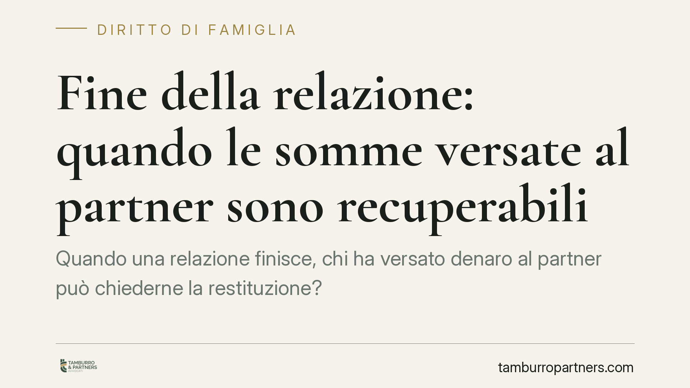

Fine della relazione: quando le somme versate al partner sono recuperabili
Quando una relazione finisce, chi ha versato denaro al partner può chiederne la restituzione? Un orientamento consolidato della Cassazione distingue tra spese per la vita comune, non recuperabili, e contributi che arricchiscono un solo soggetto, azionabili in giudizio. Decisivo è un dettaglio spesso trascurato: la causale del versamento e la documentazione conservata.

Il problema: denaro e affetti che si intrecciano
Durante una convivenza o un matrimonio è normale che un partner sostenga spese a vantaggio dell'altro: bonifici, anticipi, contributi per la casa. Finché il rapporto regge, nessuno chiede ricevute. Quando finisce, il diritto pretende proprio ciò che quasi mai è stato conservato: la prova di cosa fosse quel denaro.
Il punto non è morale, ma giuridico. Non tutte le somme versate al partner sono recuperabili. La linea di confine la tracciano gli articoli 143, 2034 e 2041 del Codice civile, su cui la Corte di Cassazione ha costruito un orientamento ormai stabile.
Inquadramento normativo
L'art. 143 c.c. impone ai coniugi l'obbligo reciproco di contribuzione ai bisogni della famiglia. Nell'ambito della convivenza, la giurisprudenza richiama invece l'art. 2034 c.c., che disciplina le cosiddette obbligazioni naturali: prestazioni eseguite spontaneamente in adempimento di un dovere morale o sociale. La conseguenza è netta: ciò che è stato dato in questo contesto non è ripetibile, cioè non può essere chiesto indietro.
Rientrano in questa categoria le spese per la vita comune: la spesa quotidiana, le vacanze, le bollette, il mantenimento ordinario della casa. Sono contributi che esprimono la solidarietà tra partner e che la legge considera definitivamente acquisiti.
Diverso è il caso dei contributi che arricchiscono stabilmente un solo soggetto: il pagamento della ristrutturazione di un immobile di proprietà esclusiva dell'altro, l'estinzione di un suo debito personale, l'acquisto di un bene intestato solo a lui. Qui può operare l'art. 2041 c.c., l'azione di arricchimento senza causa.
Il carattere sussidiario dell'azione ex art. 2041
Un aspetto pratico spesso ignorato: l'azione di arricchimento è sussidiaria. Significa che può essere esercitata solo quando chi ha impoverito il proprio patrimonio non dispone di nessun'altra azione per ottenere tutela. Se esiste un contratto, un mutuo documentato o un altro titolo, si deve agire su quella base; l'art. 2041 resta l'ultima via.
Inoltre il recupero non copre l'intero esborso, ma è contenuto nei limiti dell'arricchimento effettivamente conseguito dall'altro e della correlata diminuzione patrimoniale di chi agisce.
La minore tutela dei conviventi e il ruolo degli accordi
Il convivente si trova in posizione più debole rispetto al coniuge. Non dispone degli strumenti patrimoniali tipici dello scioglimento del matrimonio e deve ricostruire tutto in via probatoria.
Esiste però un correttivo: la Legge 76/2016 consente ai conviventi di stipulare un contratto di convivenza, con cui regolare i rapporti patrimoniali, i contributi alla vita comune e la sorte dei beni. Attraverso accordi in deroga è possibile stabilire in anticipo cosa debba considerarsi contributo definitivo e cosa invece restituibile. È lo strumento più efficace per evitare contenziosi futuri.
Il peso della prova: tutto si gioca sulla causale
In giudizio, la differenza tra somma recuperabile e somma perduta la fa la documentazione. Un bonifico con causale "regalo" o "contributo spese" sarà difficilmente ripetibile: la causale stessa qualifica l'atto come liberalità o adempimento di un dovere morale.
Un bonifico con causale "anticipo ristrutturazione immobile di Via X" o "prestito da restituire" racconta una storia diversa e fornisce la base per un'azione di recupero.
La regola operativa è semplice: la causale non è una formalità, è prova. Chi non la cura oggi si priva di tutela domani.
Cosa fare in concreto
- Indicare sempre una causale precisa in ogni bonifico rilevante: distinguere tra contributo spontaneo, prestito e anticipo finalizzato.
- Conservare la documentazione dei versamenti che arricchiscono stabilmente il patrimonio dell'altro: estratti conto, fatture, contratti collegati.
- Valutare preliminarmente la natura di ogni esborso e la documentazione disponibile prima di ipotizzare qualsiasi azione.
- Considerare un contratto di convivenza per regolare in anticipo i rapporti patrimoniali, quando la relazione è stabile.
- Verificare la sussistenza di titoli alternativi prima di contare sull'azione di arricchimento, che resta sussidiaria.
La lezione di fondo
La tutela patrimoniale non si improvvisa nel momento della rottura: si costruisce prima della crisi, con scelte documentali e contrattuali consapevoli. Quando il rapporto si incrina, il diritto non guarda ai sentimenti, ma alle carte.
---
Contributo informativo a cura di Tamburro & Partners Avvocati. Non costituisce parere legale.
Ogni famiglia ha il suo equilibrio.
Separazione, divorzio, affidamento, assegno: se vuoi un confronto riservato su una specifica situazione, scrivi allo studio. Ti rispondiamo entro un giorno lavorativo.